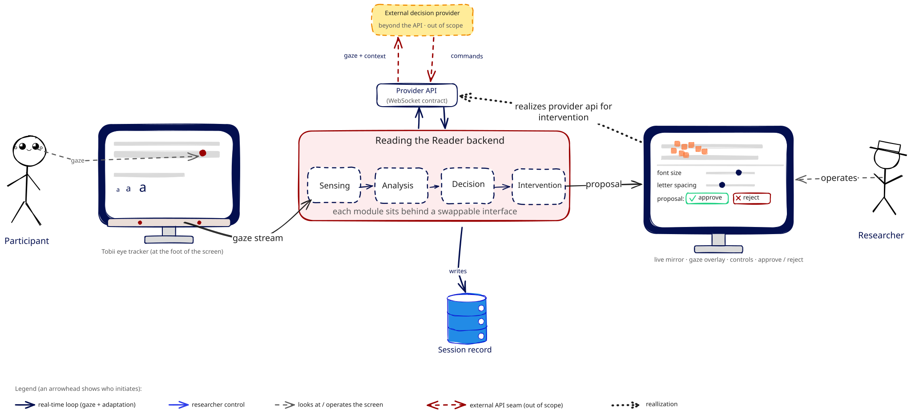
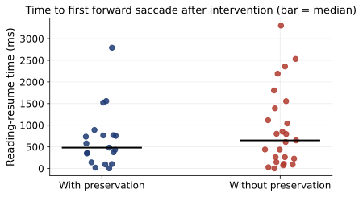
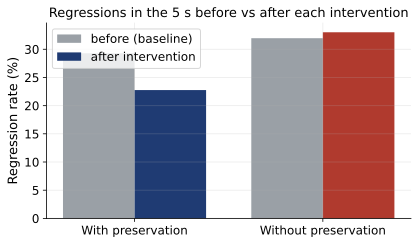
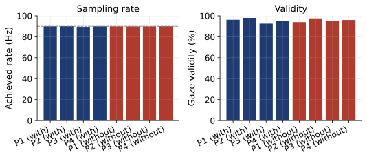
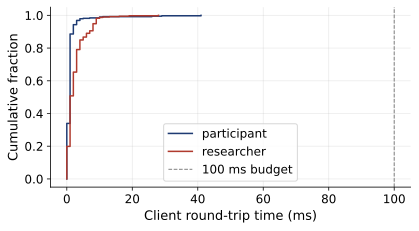
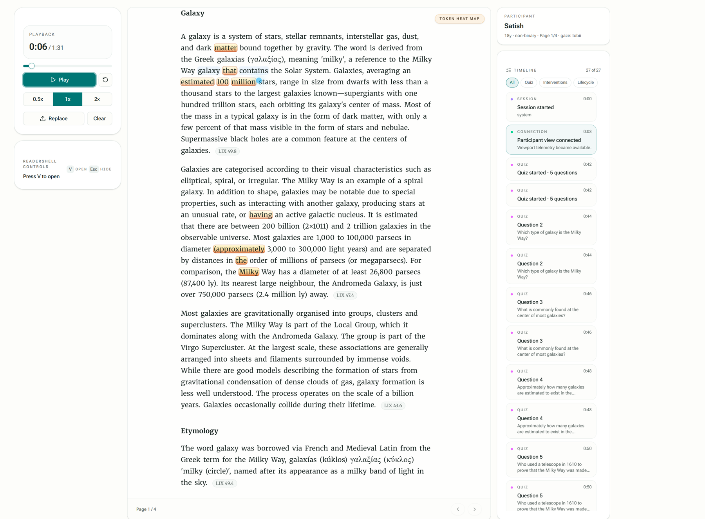

Supervisors: Per Bækgaard (pgba@dtu.dk) · Ashkan Task (ashta@dtu.dk) · Chaudhary Muhammad Aqdus Ilyas (cmuai@dtu.dk)
DTU Compute · July 2026
The problem
Reading is hard for some readers
For readers with dyslexia or age-related vision loss, text can demand
more than they can comfortably process.
Digital text can reshape itself as it is read, and an eye
tracker can tell when a reader is struggling, so it could
adapt in real time without breaking the reader's flow.
The programme
A funded, interdisciplinary effort
Reading the Reader is a research programme at DTU Compute, funded by the Novo Nordisk Foundation (about DKK 8 million).
The goalHelp readers with age-related central vision loss and dyslexia through personalised, gaze-driven typographic adaptation.
Brings together
Computer science
Typography
Psychology
Ophthalmology
Serves
Central vision loss (AMD) · Dyslexia
Reading the Reader programme, DTU Compute; funded by the Novo Nordisk Foundation.
The concept, and what is missing
Easy to draw, hard to earn
The classifier is the hard part. It is trained on a database of readers, so someone must first produce that data. And the decider can be a human (a researcher) or an AI.
But there is no platform to run the research. Prior prototypes proved the loop, yet were too coupled to swap pieces in and out.
Does wider letter spacing help an AMD reader resume faster?
Does a highlight cue cut regressions?
Each hypothesis needs different sensing, intervention, and decision logic, and a researcher just wants to plug in a module and gather data.
Concept figure reproduced from the Reading the Reader programme, DTU Compute.
Our approach
We do not build the classifier. We build the platform it presupposes.
A platform that produces reproducible session data, and exposes a seam where a human or an AI decider plugs in, all under researcher control.
No existing system unites all of it: real-time sensing, context-preserving adaptation, researcher control, and reproducible, pluggable decisions. That gap is where we fit.
The artifacta working, researcher-operated platform
+
The design knowledgeprinciples & trade-offs others can reuse
= the contribution
From their concept to ours
We named the loop: four replaceable steps
Their concept: sensing, feature extraction, classifier, intervention.
→
Their classifying loop, named as four steps we can each replace. And the classifier becomes a provider on a seam: human or AI.
What we set out to answer
Not whether reading can adapt, but how to architect it
Now that the loop is visible, the open problem becomes concrete: can this platform keep the four concerns replaceable, work on real Tobii sessions, adapt text without breaking the reader's flow, and stay under researcher control? It breaks into four questions.
RQ1 · Modularity Can sensing, analysis, decision, and intervention be separated, so a new module, even a new decider, plugs in without touching the core?
RQ2 · Sensing Can a real Tobii stream become reading events fast enough to adapt live?
RQ3 · Context preservation Can the text change mid-read without costing the reader their place?
RQ4 · Researcher control Can the researcher steer the session, and reproduce it exactly, afterwards?
The platform
The four steps, across two screens

Those four steps, now where the people are: the participant reads, the eye tracker senses, the researcher sees the gaze live and steers. The decision seam sits on the boundary, out of scope by design.
The design knowledge
Principles that keep the seams stable
The artifact is half the contribution. These four principles are the other half, the transferable part, and each one answers one research question.
RQ1 · ModularityOne seam shape, immutable snapshotsEvery module is the same shape: an identity in, a read-only snapshot in, an optional result out. New modules are additive, and none can reach into or mutate the core.
RQ2 · SensingGaze on its own real-time channelHigh-frequency gaze rides a dedicated channel, kept off the request-and-response control path, so the per-sample loop stays lock-free and inside its latency budget.
RQ3 · Context preservationValidate, then commit at a boundaryAn intervention is validated, then committed at a controlled boundary carrying a position anchor, so the text can adapt without costing the reader their place.
RQ4 · Researcher controlOne authoritative, replayable recordA single schema-versioned record, reconstructable by replay, so there is no second account to disagree and every session can be reproduced.
Demo
Watch the demo as evidence, not as a tour
Recorded video, narrated live
The recording is short. These five beats are the proof points we want you to watch for before we measure them on the next slides.
When beat five ends, we come back to the deck and show the same story again, now from the session record.
1
Two screens stay in sync
The participant reads while the console mirrors the live gaze.
RQ2
2
The text adapts and the reader keeps their place
The intervention fires, the text reflows, and the console shows the recovery.
RQ3
3
A proposal can be approved or overridden
The researcher stays in control of what reaches the reader.
RQ4
4
A module can change without touching the core
We swap the sensing source or decision provider behind the same seam.
RQ1
5
The session can be exported and replayed
One record is enough to reconstruct what just happened.
RQ4
Answered live, and measured
You saw it work. Here are the numbers.
The demo answered each question in motion. Here is the single number behind each; the full curves are in the report.
RQ1 · Modularity3 outside models, 0 core changesSwapped live in the demo, and the boundary is enforced as a build-time test.
RQ2 · Sensing90 Hz stream, every sample under 100 msThe live gaze you watched mirror to the console, measured across eight sessions.
RQ3 · Context preservationResume time 650 to 482 msWhen the text reflowed, the reader got back to reading sooner.
RQ4 · Researcher controlWhole chapter rebuilt from one recordYou approved a proposal, and every result here came from a replayable file.
Deep dive · Modularity (RQ1)
Proven from outside, enforced by the compiler
We could just assert the core is decoupled. Instead, we let an outside collaborator's reading-difficulty model connect through the seam, with no change to our code and none to theirs, and we made the boundary a rule the compiler enforces.
// Core (Domain + Application) must never depend outward on
// infrastructure, transport, or the web host. (RQ1 / NFR1)
[Fact]
public void Domain_depends_on_no_other_project_assembly()
{
var refs = typeof(InterventionEventSnapshot).Assembly
.GetReferencedAssemblies()
.Where(r => r.Name!.StartsWith("ReadingTheReader"));
Assert.Empty(refs);
}
[Fact]
public void Application_core_depends_on_no_infrastructure_assembly()
{
var outward = typeof(ExperimentSessionManager).Assembly
.GetReferencedAssemblies()
.Where(r => OutwardMarkers.Any(m => r.Name!.Contains(m)));
Assert.Empty(outward);
}
✓ Passing, and build-enforced
3 external providers connected, zero core changes (one wraps a third party's model)
1 registration to add an in-process module
the boundary is verifiable, not merely asserted in prose
Source: ArchitectureBoundaryTests.cs (condensed for the slide).
Deep dive · Context preservation (RQ3)
Does changing the text throw the reader off?
This was the result we most wanted to know. Every reflow risks losing the reader's place, so we measured it: four participants, the same article, with and without the restore, aligned to each intervention.

Reading-resume timeMedian 482 ms with preservation, against 650 ms without.

Post-intervention regressionsFell to 23% with preservation, against 33% without.
Honest boundaries
What we did not prove
We state these ourselves. They bound what the results claim, they do not undercut the results, and each points to a next step.
EffectNo efficacy claim, small sampleWe showed the platform can apply and instrument interventions, not that any of them helps a struggling reader. The readers were a small convenience sample, not clinical ones; the controlled effect study is future work by design.
AI decision-makingArchitectural, not builtThe provider seam was exercised end to end on real hardware, but with a fixed-rule reference provider, not a learned model, and the automated path rests on a single validation run rather than a campaign.
Context restoreFixed geometrically, not behaviourallyThe original restore over-repositioned on small reflows, throwing the reader well past where the text actually moved. The revised one removes this geometrically, but has not been re-tested with readers.
The lesson Our line-stabilisation is a hand-tuned bias, a "poor man's Kalman filter": it borrows the intuition (trust the prior position) but keeps none of the machinery. A principled Kalman filter is future work.
What this now makes possible
A foundation, not an endpoint
Remember the classifier? It needed data, and it could be a human or an AI.
We do not build that classifier. We now produce the data it trains on and expose the seam it plugs into. The next team trains it on our records.
A year from now a psychologist loads a hypothesis, attaches an AI decider to the seam, runs two hundred sessions overnight, and replays any one of them, and none of it touches the core.
Nearer term, the honest next steps from our limitations: re-test the revised restore with real readers, and replace the hand-tuned line bias with a principled Kalman filter.
What we want you to take away
A researcher can watch someone read in real time and reshape the text as
it happens, without costing them their place, and every part of that loop
is swappable without touching the core.
We did not build the classifier. We built the platform it presupposes, and proved the seams hold under a real 90 Hz Tobii loop. Four questions answered, one honest lesson learned, and a gap no one else had filled.
Thank you
Questions
Reading the Reader: a modular platform for gaze-driven adaptive reading research.
Authors
Sachin Baral s243871@dtu.dk
Satish Gurung s243872@dtu.dk
Platform, docs & the add-a-module guide
github.com/MrSachin7/reading-the-reader-monorepo
Backup · B1
Fixation detection: I-AOI (dwell-based)
The spatial stage already resolves each gaze point to the word it falls on, so the word token is the area of interest, and a fixation is identified purely from the dwell time on it.
The I-AOI branch of the Salvucci and Goldberg taxonomy. NOT I-DT (dispersion), NOT I-VT (velocity). There is no velocity threshold.
A token is held as a candidate, then confirmed as a fixation once dwell passes 90 ms initially, 70 ms within a line, and 135 ms across a line change (raised because that move is larger and noisier).
Per-word binning by total dwell: under 45 ms is dropped as noise, at least 130 ms counts as a fixation, and in between is recorded as a skim.
Backup · B2
The line-bias vs. a Kalman filter
A deterministic hysteresis bias, not a Kalman filter. It keeps gaze on the line being read despite vertical jitter of the order of the line spacing.
In pickBestLine, each sample is charged for its vertical distance to every line band; the line already being read gets a fixed discount, so jitter does not flicker the mapping onto a neighbour.
It shares a Kalman filter's intuition (use the prior position to reject a single noisy sample) but none of its machinery: no probabilistic state, no covariance, no predict-and-update cycle.
A principled Kalman filter would generalise it, and is future work. We do not claim it is one.
Backup · B3
AOI survives an intervention's reflow
Yes, this is handled, and it is a deliberate piece of engineering rather than a gap.
Word boxes are re-measured from the live DOM on every mutation, resize, and scroll.
So after an intervention reflows the text, the gaze-to-word mapping uses fresh coordinates, never stale ones.
Gaze is normalised before mapping (FR4.2), so the boxes hold across screen resolutions too.
Backup · B4
Design decision register (DR1–DR9)
Every architectural choice is traced to the driver that forced it; the trade-offs are deliberate and visible.
DR1 Inward-dependency layering (ports and adapters)
DR2 Uniform seam shape with a per-concern registry
DR3 Dedicated real-time channel for gaze
DR4 Uniform, identity-keyed provider seam
DR5 Two-phase validate-then-commit intervention
DR6 One authoritative, schema-versioned record
DR7 File-backed, checkpointed local store
DR8 Sensing-source port behind an adapter
DR9 Autonomous and advisory execution modes
DR3, DR7, and the DR4 fallback trade a measure of architectural purity for responsiveness and robustness; DR1, DR2, and DR8 hold the separation of concerns firm.
Backend: C# on .NET 10, ASP.NET Core, FastEndpoints 8; CsvHelper for record export.
Realtime: gaze on a dedicated WebSocket channel (/ws); commands over REST (/api).
Tobii: the SDK ships .NET and Python bindings only, so we chose .NET. TobiiEyeTrackerAdapter subscribes to the SDK gaze callback and normalises every sample to the GazeData contract.
The Windows-only SDK, its licence, and device detection are quarantined behind the sensing-source port (DR8); a simulated mouse source sits behind the same contract.
Backup · B6
Requirements: build → demo → feedback → refine
Requirements were not fixed up front. A working prototype existed from the start, so much of the set emerged as increments were demonstrated to the supervisors and folded back in.
It. 1 Core baseline: calibration, controlled reading, live mirror, adaptive loop
It. 2 Extensibility and control: incremental recovery
Reconstructed retrospectively from version control and supervision notes, so the timing is approximate; the substantive changes are evidenced by the implementation work. Full trace in Tab. 4 (requirements evolution).
Backup · B7 · Sensing (RQ2)
Rate, validity, and transport latency

Rate & validity89.9 Hz mean against a rated 90, validity above 92% in every session.

Transport latencyEvery sample inside the 100 ms budget (median 1 ms, 95th percentile within 8 ms).
Backup · B8 · Researcher control (RQ4)
Every result rebuilt from one record

A session replayed from its exported record: timeline, gaze, and interventions all reconstructed from the file alone.
one gated console operated every session
the entire evaluation chapter was rebuilt from records like this
export, re-import, and scrub, no live hardware needed
Replay view of a recorded reading session (from the implementation chapter).